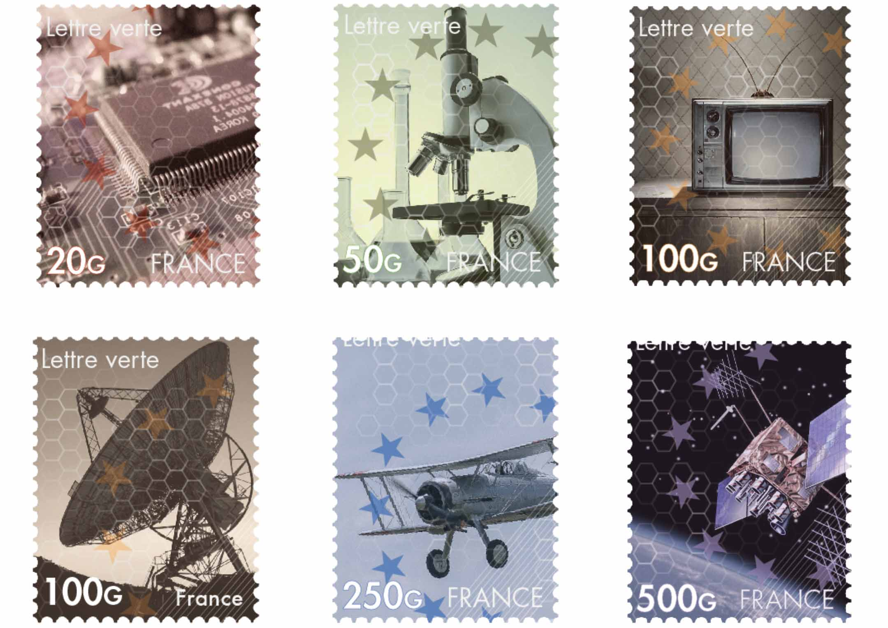

Workshops
Aliquam ut ex ut interdum donec amet imperdiet eleifend
Billets
Pour ce Workshop, nous devions imaginer comment redesigner des billets de banque et des timbres. Nous étions libre dans le thème des graphismes. Notre concept s’appelle :
"De l’infiniment petit à l’infiniment grand"
Pour le recto des billets nous avons choi- si des visuels allant du microscopique au plus vaste. Et pour le verso ainsi que les timbres, nous avons opté sur le thème des divers moyens de communication et transmission de l’information.

